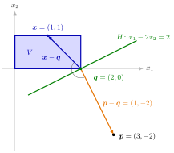

(a) There is a unique q∈V with ∥x−p∥≥∥q−p∥ for all x∈V, so ∥p−q∥=dist(p,V)=inf{∥p−x∥:x∈V} and the infimum is attained.
(b) The nearest point satisfies
(p−q)⊤(x−q)≤0∀x∈V.
(c) The hyperplane H={x∈Rn:(p−q)⊤x=(p−q)⊤q} is a supporting hyperplane of V at q with (p−q)⊤x≤(p−q)⊤q for all x∈V, and (p−q)⊤p=(p−q)⊤q+∥p−q∥2>(p−q)⊤q. So H is also a separating hyperplane of V and {p}.
Every point p outside a closed convex set has exactly one closest point q in the set, measured in Euclidean distance. Standing at q and looking at p, the whole set lies behind you or at most level with you.

The figure shows Example 2 below, with V=[0,2]×[0,1] and p=(3,−2). The nearest point is the corner q=(2,0), at distance 5. For the drawn point x=(1,1),(p−q)⊤(x−q)=(1,−2)⊤(−1,1)=−3≤0, an angle of about 162∘. The green line through q perpendicular to p−q is the supporting hyperplane H={x1−2x2=2} of (c): V lies on one side of it and p on the other.
Inequality (b) makes "behind" precise: for every x∈V the angle between p−q and x−q is at least 90∘. It comes from moving from q a little towards x, which stays in V by convexity and cannot bring us closer to p. Read as (p−q)⊤x≤(p−q)⊤q, it says that V lies in the closed halfspace through q with normal p−q, which is (c).
Existence uses closedness: a minimizing sequence stays in a closed ball around p, so by Bolzano–Weierstrass a subsequence converges, and its limit lies in V because V is closed. For an open disc the infimum is not attained (Example 3 below). Uniqueness uses convexity: if q1=q2 were both nearest, their midpoint would lie in V and be strictly closer, by ∥21(q1−p)+21(q2−p)∥2=21∥q1−p∥2+21∥q2−p∥2−41∥q1−q2∥2. Two points at equal distance show what goes wrong without convexity (Example 4 below).
When V is a subspace, q is the orthogonal projection of p from Math V, and (b) becomes p−q⊥V. For a polyhedral set the nearest point is generally not the projection onto the nearest bounding line (Example 2 below). Applied to a finitely generated convex cone, the nearest point later gives a short proof of Farkas' lemma.
Existence and uniqueness: for nonempty closed convex V and p∈/V the nearest point q exists and is unique, and dist(p,V)=∥p−q∥>0.
Angle condition: (p−q)⊤(x−q)≤0 for all x∈V. Conversely, a point q∈V with this property is the nearest point, since ∥p−x∥2=∥p−q∥2−2(p−q)⊤(x−q)+∥x−q∥2≥∥p−q∥2.
The hyperplane through q with normal p−q supports V at q and separates V from {p}.
1. A disc. Let V=Cl(B(0;5))⊆R2 and p=(6,8). The nearest point lies on the ray from 0 to p:q=105(6,8)=(3,4) and dist(p,V)=10−5=5. With p−q=(3,4), condition (b) reads 3x1+4x2−25≤0, which holds on V by the Cauchy-Schwarz inequality: 3x1+4x2≤5∥x∥≤25. So H={3x1+4x2=25} supports V at q, while p gives 3⋅6+4⋅8=50>25.
2. A rectangle: the nearest point is a corner. Let V=[0,2]×[0,1] and p=(3,−2). Moving each coordinate into its interval gives q=(2,0), with p−q=(1,−2) and dist(p,V)=5. Check (b): (1,−2)⊤(x−q)=(x1−2)−2x2≤0 because x1≤2 and x2≥0 on V, so q is the nearest point by the converse in Key Results. The supporting hyperplane H={x1−2x2=2} meets V only at q, since equality needs x1=2 and x2=0. Projecting p onto the bounding line {x2=0} gives (3,0)∈/V, and onto {x1=2} gives (2,−2)∈/V: neither is the answer.
3. Closedness matters for existence. Let V=B(0;1)⊆R2, the open unit disc, and p=(2,0). Then dist(p,V)=1, approached by (1−k1,0), but every x∈V has ∥x−p∥≥2−∥x∥>1. No point of V is nearest.
4. Convexity matters for uniqueness. Let V={(−1,0),(1,0)}, closed but not convex, and p=(0,2). Both points have distance 5, so the nearest point is not unique. The angle condition also fails: for q=(1,0) and x=(−1,0),(p−q)⊤(x−q)=(−1,2)⊤(−2,0)=2>0.
Aliases: closest point of a convex set, projection onto a closed convex set, best approximation in a convex set
Keywords: |\boldsymbol{p}-\boldsymbol{q}|=\operatorname{dist}(\boldsymbol{p},V), (\boldsymbol{p}-\boldsymbol{q})^{\top}(\boldsymbol{x}-\boldsymbol{q})\leq0, H={\boldsymbol{x}\colon(\boldsymbol{p}-\boldsymbol{q})^{\top}\boldsymbol{x}=(\boldsymbol{p}-\boldsymbol{q})^{\top}\boldsymbol{q}}, unique minimizer of the distance, existence and uniqueness of the nearest point
Symbols: element of, for all, real numbers, square root, subset
Last updated: 5 November 2026 12:47
Nearest Point of a Closed Convex SetFarkas' LemmaSeparation of a Point and a Closed Convex SetConvex Set in R^nEuclidean DistanceOpen and Closed Sets in a Metric SpaceBolzano Weierstrass TheoremInfimumSupporting HyperplaneSeparating HyperplaneOrthogonal ProjectionNormal ConeExtreme Value Theorem on Compact Sets